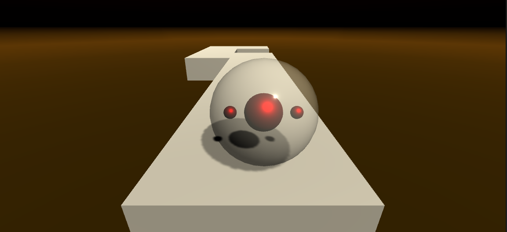
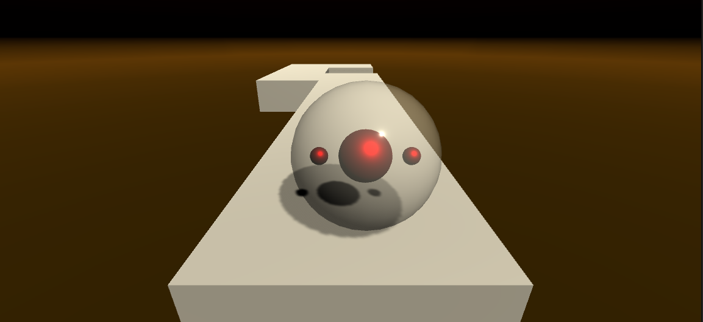

Hi, I'm Jason Freedman
I graduated from Chapman with a B.S. in Computer Science and a minor in game development. I have learned how to code in Python, Java, and C++. I also know how to code in the Unity program with C#. Additionally, I have worked with modeling programs such as Maya and Blender, although my experience in those is limited (I can make objects, but I can't make people).
I used Python as an introduction to Computer Science. I found it easy to learn and have recently brushed up on it (though it is not currently my strongest language).
I used Java for my intermediate work. Most of it involved creating programs to solve calculations.
I used C++ for my senior work. With it, I have done things like creating a program to go through a string of DNA nuceltides and return the matching string, a program that calculates how long a colony of bacteria will last in a simulated game, a simple pathfinding script, and a program to compare the speed of 3 of the sorting algorithms.
Most of the coursework for my minor involved programming with Unity
One of the projects I worked on was a team project called Insert Memory Here. The goal of the project was to create a memory game to help people with dementia or short-term memory loss. As this was a project done on a school computer, I don't have any pictures of it.
One project I worked on in my free time was a game where you could control the movement of a rolling ball on an endless track. The track would randomly generate each next part of the track from an array of road segments and would continue to generate a track until the player fell off the track, at which point the game would start over. The game also has an option to continuously decrease the spawn and de-spawn times of the track pieces.
 


I have some experience creating objects with Maya and Blender, although as previously mentioned, creating things in these programs was either a hobby or work for a class in my minor. Here are some examples of my work:

I had a class at Chapman that focused exclusively on Data Science. This class mainly used SQL to create databases and the code to iterate through them. While I haven't used SQL in a while, I remember finding it easy to learn and easy to pick up if I needed to brush up on it.
I currently have an internship at the Virtual Reality Medical Center to develop games to help children, adolescents, and young adults with important life skills and basic communication strategies.
From June 3rd to July 26th, I had an internship at the PoNG Center to develop a gamified version of one of their tests so as to make a version of the test that was more stimulating/interesting. I was in charge of creating the code for the game.
freed108@mail.chapman.edu
760-585-8630